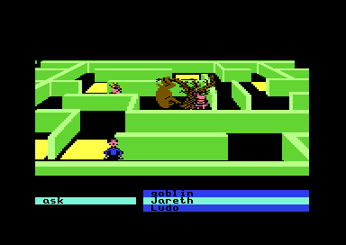
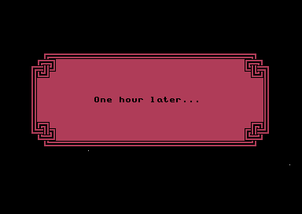
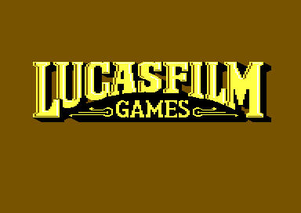

01 · The game
Thirteen hours to reach Jareth
Labyrinth opens on a city block outside a movie theater. You give your character a name and answer a few setup questions, then walk the streets in text. Commands are built from two word wheels at the bottom of the screen, one of verbs and one of objects. A ticket gets you into the cinema, and the film pulls you into the Goblin King's maze.
Inside the maze the game becomes graphical. You steer your character along the walls of each room with the joystick and keep using the word wheels to talk, open doors, give things away and fight. The goal, from the Player's Guide, is to reach Jareth before thirteen hours run out.1 The maze is 21 separate loads from disk: the entrance gate, corridors and hallways, the Wall of Hands, the Bog of Eternal Stench, the Goblin Village, the castle and the final duel.
The city: the street described in text, with the verb and object wheels below. From the supplied disk.

Inside the maze: Ludo held up in the hedge maze, and the same wheels, here offering ask and three people. From the supplied disk.
02 · Commands
Every reply in the maze comes from one table per scene
Each of the 21 scenes loads its own table of commands at $8B00. A row is two dictionary numbers, a verb and an object, and a zero in either place means "anything". When you press fire, the engine walks down the rows from the top and stops at the first one that fits. The scene's second table, at $8BC0, holds one 16-bit word for each row. A word of $8000 or more is a routine to run. A smaller word is a message: the engine adds $8000 and prints the text it finds there.
Loading the scene…
The rows are read from each scene's listing. The lookup is a port of the engine's loop at $5F63, and test_dispatch.js checks it against that loop running on the kit's 6502 for every scene, every verb and every object the scene names, plus objects it does not. The replies are decoded by a port of the engine's printer, and the same test compares every one with the letters the printer at $67B5 sends to the screen.
The order of the rows is the design: a scene lists its specific cases first and its catch-alls after them. The Wall of Hands has five rows for manicure. Manicure door answers "There's no door here." and manicure Jareth "No thank you.", both stored text. Manicure rocks runs code that ruins your shears, manicure wall runs the routine that counts your manicures, and manicure with anything else runs a check for shears before it says "He's not here." In 19 of the 20 scenes that take commands, a row for hit with anything sits low in the table, so every combination the wheels can make gets an answer.
Most rows are plain text: the scene's code only runs when something has to change, such as a door opening, an item changing hands or the clock moving on. Across the 21 scenes, 721 rows are messages, and the entrance gate has no rows at all: it plays as a script.
03 · Text
Replies are stored half as letters, half as dictionary words
A reply starts with two header bytes: the indent and the colour of the speech box. The text follows. Bytes below $7F are letters. $FB to $FE each take the next byte as the number of a word in the shared dictionary, and print it as stored, capitalised, followed by a space, or both. $F7 to $FA draw the edges of a speech balloon, $FF starts a new line and $00 ends the reply. The names of people and things are stored once, in the dictionary that also feeds the word wheels.
The bytes of the reply chosen above. header dictionary word control
04 · Rooms
A room is a strip of blocks, each sixteen characters square
The maze rooms scroll sideways. Each is built from a short map at $0600, one byte per block, and the low four bits of the byte pick one of sixteen pages of character codes at $BC00-$CBFF. Each page is a 16 by 16 block of characters. The header byte $0705 sets the map's shape: 256 blocks in one row when it is 0, and half as many in twice as many rows for each step up. When the room scrolls, the routine at $4C01 fills a newly exposed row of 40 characters, and $4C7A a column of 16.
The whole strip, drawn with the scene's own character set from $E000, in shades of grey. Scroll it sideways. The game colours these characters per cell through a second routine at $5B76, which is not reproduced here, so the shades stand for the four pixel values of each multicolour character, not for the colours on screen. The block lookup is a port of $4C01, and test_room.js checks it against the routine itself on the kit's 6502: 574,720 screen cells across every scene, all equal.
Building rooms from sixteen reusable blocks keeps each scene small. A hedge or a brick wall is drawn once, on one page, and a room 64 blocks long is a 64-byte map. The same scheme lets the game change a room in place: opening a door in the Brick Hallway rewrites one byte of the map so the next redraw picks the open-door page (Brick Hallway).
05 · A puzzle in code
Alph and Ralph decide at random which door is the lie
Two guards stand at two doors. One always lies and the other tells the truth, they say, and they will not help until you have opened all fifteen doors of the Brick Hallway behind you. The game counts those doors: the room's map starts with three open, and each door you open adds one to a counter. Alph's reply changes when the counter reaches fifteen.
When the guards' room loads, its setup code stores two random bits. The first, at $8F06, decides which doorway leads on to the Wall of Hands and which drops you into a pit with "Ok, we lied. It wasn't endless" and the end of the game. The second, at $8F07, is compared with the first when a guard is asked again later: when they match the later answer points you to the castle, and otherwise to your death. So the safe door is not the same in every game, and only the guards' answers tell you which it is.
The Areas page steps through every part of this exchange with ports of the guards' own code: the door count, the replies, the random bits and what each door does (Alph and Ralph).
06 · Exits
The first corridor picks your destination with a random number
The first corridor has eight openings. Each one leads to a slot in one of four banks of destinations, and the bank is chosen by the game's random-number generator when you walk through. The generator at $4210 multiplies its 16-bit state at $0502 by 37 and adds 17, and bits 5 and 6 of the new high byte pick the bank. The engine's main loop calls it on every pass, so the state keeps moving while you stand still, and the bank you get depends on the moment you step through. Every stored opening in the copy studied leads to the Brick Hallway; the bank only changes where in the hallway you arrive.
The step is state × 37 + 17, kept to 16 bits; test_dispatch.js checks the port against $4210 for all 65,536 states. The first line starts from $435B, the state recorded at the moment an ordinary walk through the corridor's opening at column 8 reached the exit; its next number, $BC38, gave bank 1 and entry 35 of the Brick Hallway in the emulator. The Areas page has the corridor's banks and checks them against the game (The first corridor).
07 · Time
The thirteen hours
The clock is kept in hours and minutes in the saved state. Some actions spend hours outright. At the Wall of Hands, the eighth manicure in a row calls the engine's hour routine at $0C61, which takes one hour off and shows the "One hour later" panel. When the hours run out the same panel ends the game with Jareth's verdict: "Your time is up. You have failed to defeat me." How fast the clock runs on its own while you play is not established.

The eighth manicure at the Wall of Hands costs an hour. From the supplied disk.
08 · Music
Music: five tunes and 44 sound effects
The game stores five tunes: a short jingle in the engine, the menu tune of the opening, the gate's tune, the duel's music and the win ending. Each is a header, three note sequences and a set of instruments, played by the engine's own sound code. The Music tab plays every tune and every sound effect through a model of the SID chip, driven by the game's own data.
09 · The release
Lucasfilm Games' adventure
Lucasfilm Games made Labyrinth from Jim Henson's film, and Activision published it in 1986. The disk's credits name David Fox as production manager and programmer, Charlie Kellner as technical director and lead programmer, and Gary Winnick for character animation and background art. David M. Martin Jr. is credited with the music and Commodore sound.1 This page follows the two-sided English Commodore 64 disk edition.

The loading screen. From the supplied disk.
Every byte of the game is described in the Source code tab, one listing for each of its 23 parts. The Areas tab goes through every scene, the Controls tab covers the wheels and the joystick, and Discoveries collects the quirks and bugs the code shows.